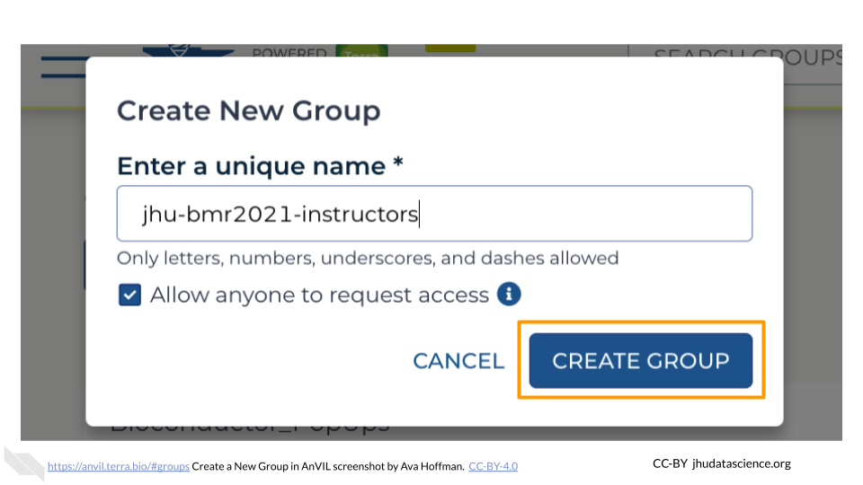
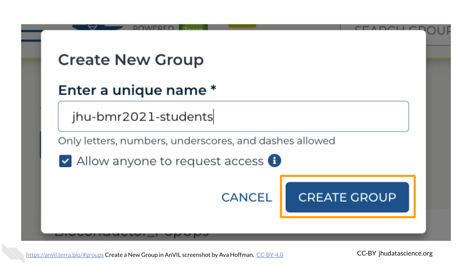
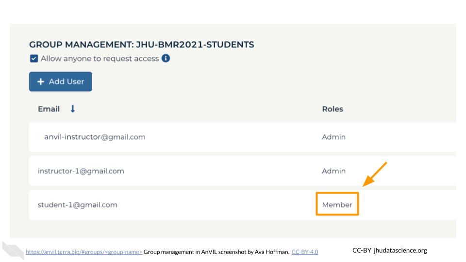
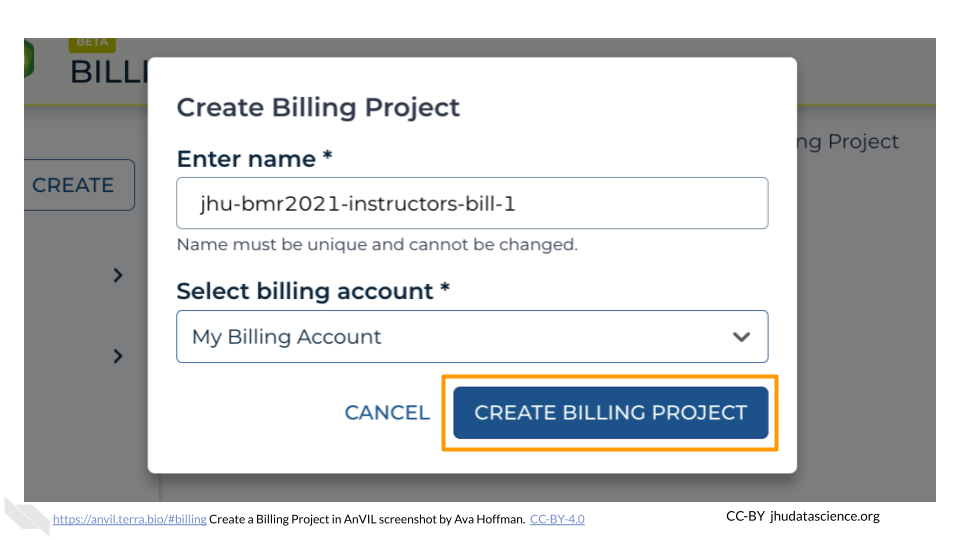
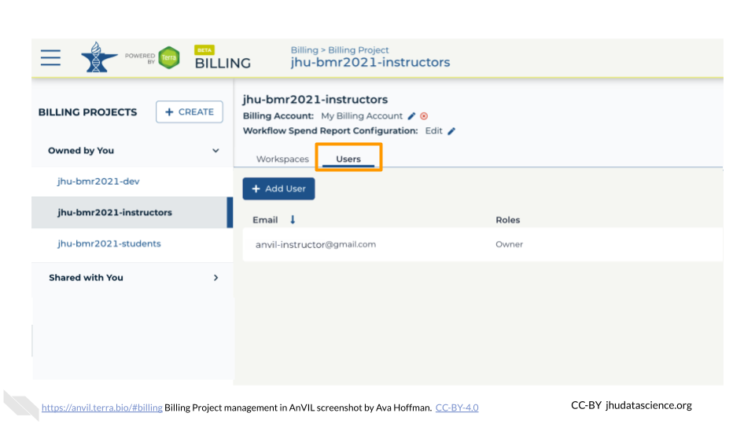
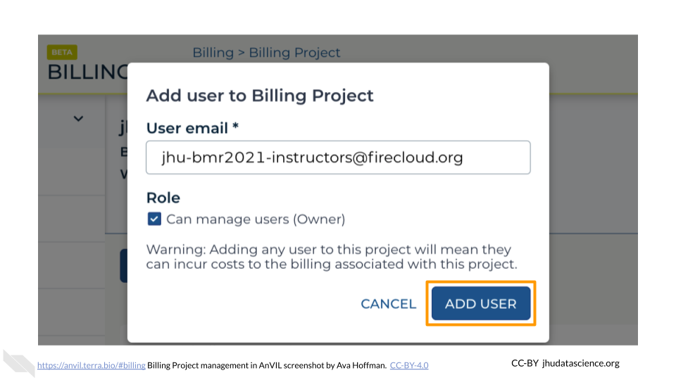
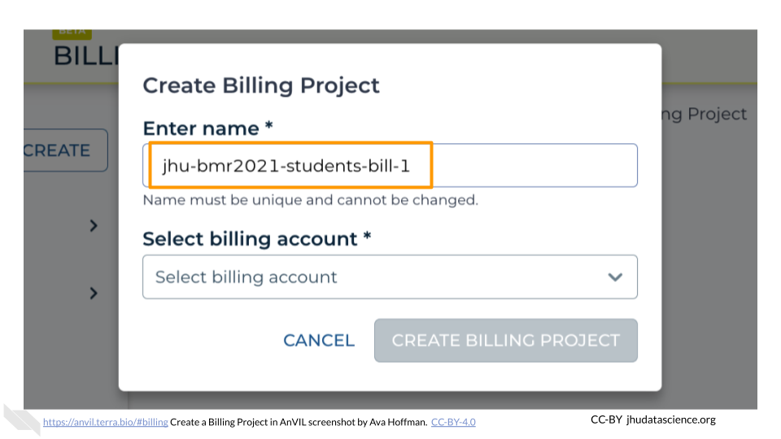
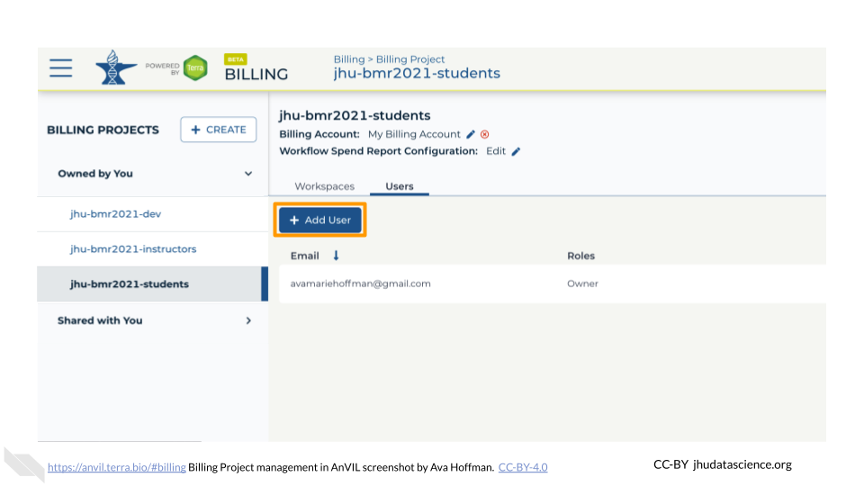
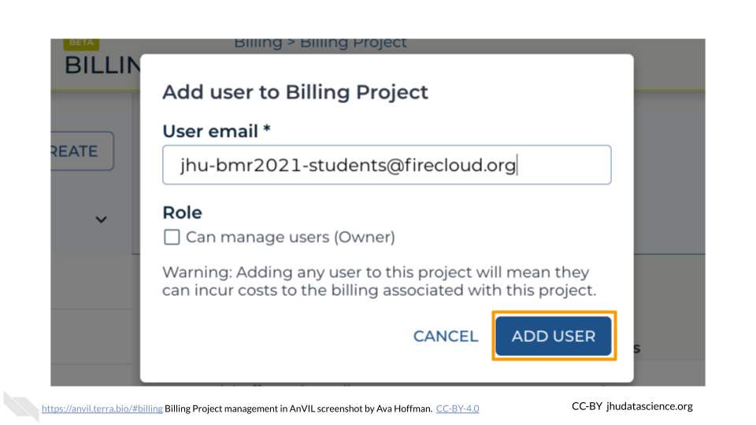
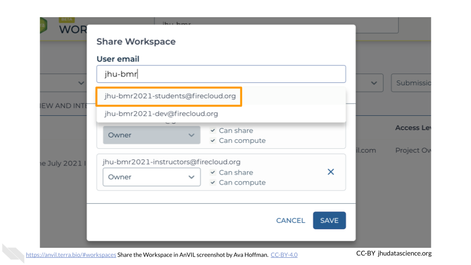

Chapter 9 Setting up the Class Activity
9.1 Overview of Class Setup
This section will show you how to organize your class to make it easier to administer access to your content. You will need to have a list of who will be taking your class, such as a course roster or sign-up list, as well as a list of additional instructors or teaching assistants. You can make changes later, so the list of students need not be final.
9.2 Collect Google IDs
AnVIL IDs are based on Google accounts.
Students – Contact students/participants to get their AnVIL IDs. These should be Gmail addresses or emails with GSuite capabilities. You can link students to Student Account Setup for instructions on what they should do.
Co-instructors – If you will be working with other instructors, such as co-instructors or teaching assistants, you will need to collect their IDs as well.
9.3 Set Up Groups
Reminder:
- Google Billing Accounts are managed on Google Cloud Platform and are used for organizing funding sources (e.g. credit cards, cloud credits).
- Terra Billing Projects are managed through Terra, and allow you to associate your Terra activity with the correct Google Billing Account.
For a more detailed explanation, please see the chapter on Account Setup.
We suggest creating two different Terra Billing Projects under the appropriate Billing Account that you created on cloud.google.com: one for students and one for co-instructors. The instructions below will walk you through how to set this up.
Groups enable you to share your class Workspace and manage permissions for many people at once. We recommend starting with one Group for instructors and one Group for students.
Instructor Group {#instructor-group}
Create an informative, unique Group name for any co-instructors and teaching assistants. We suggest a combination of institution-class-role (e.g., “jhu-bmr2021-instructors”). Only letters, numbers, underscores, and dashes are allowed in Group names. To create a Group for instructors:
Click “+ Create a New Group”

Type in your instructor Group name
Click “CREATE GROUP”

You now have a unique instructor Group.
Add Instructors as “Admin” (Instructor Group)
Now that your instructor Group has been created, you should add any additional instructors. You should also ensure that they have the correct permissions.
Go to https://anvil.terra.bio/#groups/ and click on the instructor Group name. This page should also be visible at
https://anvil.terra.bio/#groups/<group-name>.
Click on “+Add User”. You will be prompted to add the instructor’s AnVIL ID.

Type in the instructor’s AnVIL ID

Make sure “Can manage users (admin)” is selected

Click ADD USER. This will take you back to the Group administration page.

Make sure the newly added instructor displays “Admin” under “Roles” beside their AnVIL ID. Repeat this process for any additional co-instructors and teaching assistants.

Student Group {#student-group}
Next, you will create a Group for your students. Create an informative, unique Group name. We suggest a combination of institution-class-role (e.g., “jhu-bmr2021-students”). Only letters, numbers, underscores, and dashes are allowed in Group names. To create a Group for students:
Click “+ Create a New Group”
Type in your student Group name
Click “CREATE GROUP”

You now have a unique student Group.
Add Instructors as “Admin” (Student Group)
The next steps ensure any additional co-instructors and teaching assistants are able to administer the student Group in case you are unavailable. Follow the steps below to add each co-instructor in the student Group:
Go to https://anvil.terra.bio/#groups/ and click on the student Group name. This page should be visible at
https://anvil.terra.bio/#groups/<group-name>.
Click on “+Add User”. You will be prompted to add the instructor’s AnVIL ID.

Type in the instructor’s AnVIL ID
Make sure “Can manage users (admin)” is selected
Click ADD USER. This will take you back to the Group administration page.
Make sure the newly added instructor displays “Admin” under “Roles” beside their AnVIL ID. Repeat this process for any additional co-instructors and teaching assistants.

Add Students as “Member”
Follow the steps below to add individual students to the student Group:
Go to https://anvil.terra.bio/#groups/ and click on the student Group name. This page should be visible at
https://anvil.terra.bio/#groups/<group-name>.Click on “+Add User”. You will be prompted to add an AnVIL ID.
Type in the student’s AnVIL ID

Click ADD USER

Make sure the newly added student displays “Member” under “Roles” beside their AnVIL ID. At present, each student’s AnVIL ID must be added separately.

Your instructor and student Groups are now set up.

9.4 Set Up Billing Projects
Billing Projects in Terra help organize your compute costs. Like Groups, we suggest creating two different billing projects under the appropriate Billing Account that you created on cloud.google.com: one for students and one for co-instructors.
Billing Project names must be globally unique and cannot exceed 30 characters.
Instructor Billing Project {#instructor-billing-project}
First, create the Billing Project for instructors. We suggest the name of the Billing Project should be a combination of institution-class-role (e.g., “jhu-bmr2021-instructors-bill-1”). To create a Billing Project for instructors:
Click “+CREATE”

Type in your instructor Billing Project name

Select the appropriate Billing Account

Click “CREATE BILLING PROJECT”

You now have a unique instructor Billing Project.
Add Instructors as “Owner” (Instructor Project)
Next, you want to give instructors permission to use the Billing Project to compute. To set instructor permissions:
Select the “Owned by You” Billing Project sub-list

Select the Billing Project you made for instructors in Instructor Billing Project

Select the “Users” tab

Click “+ Add User”. You will be prompted to add a “User email *”.

Begin typing the instructor Group name set up in Instructor Group. You should see an email in the form
(firecloud.org?) (e.g., jhu-bmr2021-instructors@firecloud.org). Ensure “Can manage users (Owner)” is selected

Click “ADD USER”

Your instructor Billing Project is now set up.
Student Billing Project {#student-billing-project}
Next, create a student Billing Project. Again, we suggest a combination of institution-class-role (e.g., “jhu-bmr2021-students-bill-1”). To create a Billing Project for students:
Click “+CREATE”
Type in your student Billing Project name

Select the appropriate Billing Account (same as above)

Click “CREATE BILLING PROJECT”

You now have a unique student Billing Project.
Add Instructors as “Owner” (Student Project)
You want to ensure any additional co-instructors and teaching assistants are able to administer the student Billing Project in case you are unavailable. To set instructor permissions:
Select the “Owned by You” Billing Project sub-list
Select the Billing Project you made for students in Student Billing Project

Select the “Users” tab

Click “+ Add User”. You will be prompted to add a “User email *”.

Begin typing the instructor Group name set up in [### Set Up Groups]. You should see an email in the form
(firecloud.org?) (e.g., jhu-bmr2021-instructors@firecloud.org). Ensure “Can manage users (Owner)” is selected
Click “ADD USER”
This step makes it so that co-instructors can edit permissions and administer the student Billing Project as needed. While this means you and co-instructors can compute using the student Billing Project, this makes spending difficult to track. Instructors should always use the instructor Billing Project to compute. This makes it much easier to track costs associated with instructors versus students.
Add Students as “User”
Next, you will add your student Group to the student Billing Project so that they can compute. To set student permissions:
Select the “Owned by You” Billing Project sub-list
Select the Billing Project you made for students in Student Billing Project
Select the “Users” tab
Click “+ Add User”. You will be prompted to add a “User email *”.
Begin typing the student Group name set up in Student Group. You should see an email in the form
(firecloud.org?) (e.g., jhu-bmr2021-students@firecloud.org). Keep “Can manage users (Owner)” deselected.

Click “ADD USER”

Your student Billing Project is now set up.
9.5 Set Permissions on the Workspace
Finally, you will want to set up permissions for co-instructors and students to see the class Workspace you created with the development Billing Project in Developing Content. AnVIL users can take on the “Owner”, “Writer”, or “Reader” role for a Workspace.
Add Instructors as “Owner”
You should add your co-instructors and teaching assistants as “Owners” to the class Workspace. This is useful if they need to edit the course content or share the space with students on your behalf. To share and change permissions:
Go to https://anvil.terra.bio/#workspaces and find your class Workspace you set up in Developing Content
Click the teardrop button for your class Workspace
Click “Share”. This will open a dialog box.

Enter the name of the instructor Group (e.g., jhu-bmr2021-instructors). This will create a dropdown for the Group permissions in the box. Select this Group.

Change permissions to “Owner” using the dropdown menu under the instructor Group

Click “SAVE”

This step makes it so that co-instructors can edit the original content of the Workspace as needed. While this means you and co-instructors can compute using the development Billing Project, this makes spending difficult to track. Instructors should instead clone the Workspace using the instructor Billing Project. This makes it much easier to track costs associated with this iteration of your class versus further iterations (e.g., the following semester or year).
Add Students as “Reader”
Next, add your students as “Readers” to the class Workspace. This means they will be able to view and clone the Workspace, but not make edits or perform computations. To share the Workspace:
Click the teardrop button for your class Workspace
Click “Share”. This will open a dialog box.
Enter the name of the student Group. This will create a dropdown for the Group permissions in the box. Select this Group.

Ensure permissions are set to “Reader” (default)

Click “SAVE”

You have now correctly set up your class permissions!
9.6 Notify Terra
Contacting Terra ahead of your class time helps the Terra team avoid any major disruptions to your class. Contact Terra by submitting a request for a hold on scheduled maintenance and downtime. It’s also a good idea to ask about major changes planned for the time prior to your class.